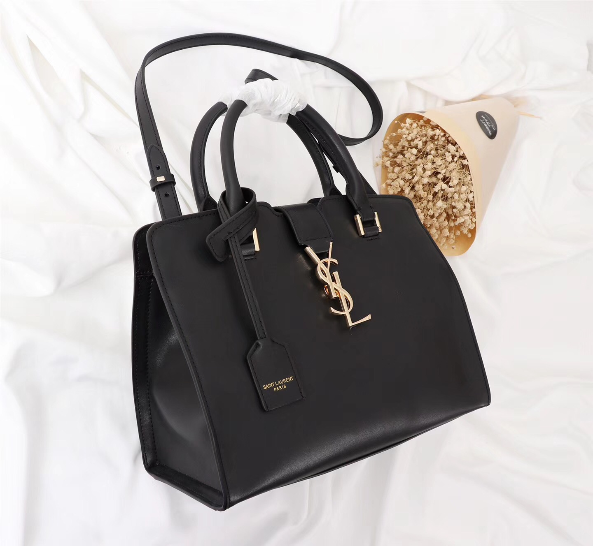
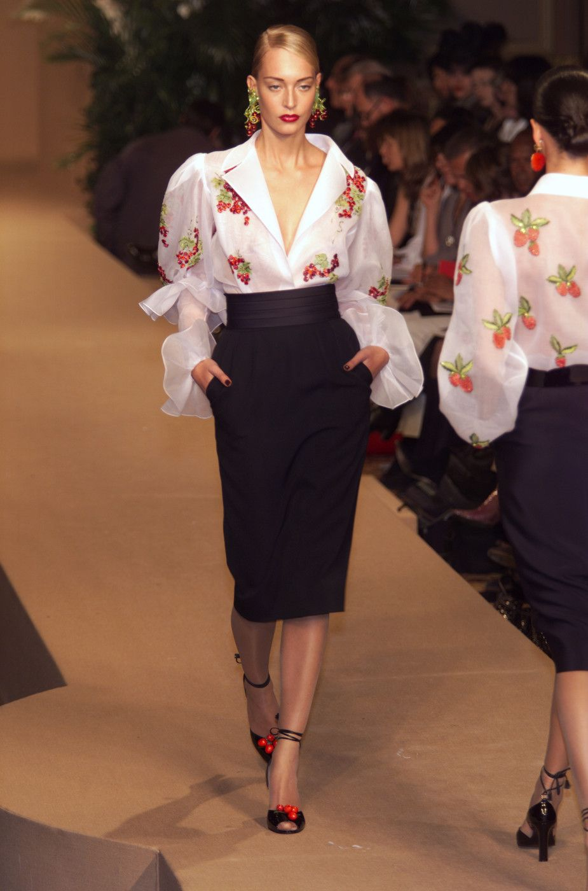
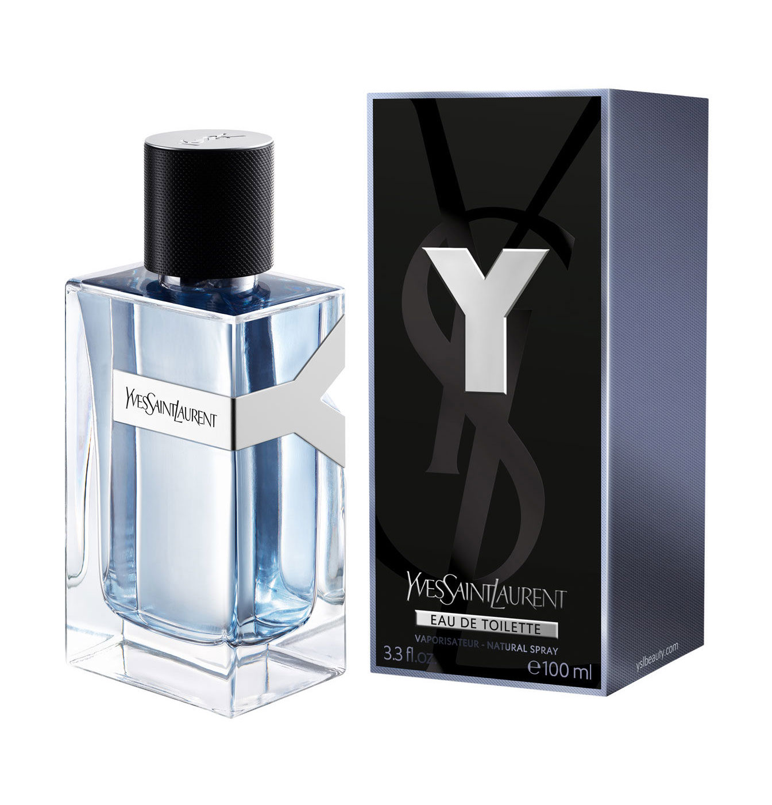

Kao tinejdžer, Yves Saint Laurent napustio je Alžir i otišao u Pariz raditi za dizajnera Christiana Diora, gdje je stekao priznanje za svoje dizajne haljina. Godine 1966. pokrenuo je vlastite modne marke, gdje su mu njegove adaptacije smokinga za žene donijele slavu. Bio je prvi živi dizajner koji je 1983. godine dobio samostalnu izložbu u Muzeju umjetnosti Metropolitan u New Yorku. Godine 1960. Saint Laurent je pozvan natrag u svoju domovinu Alžir kako bi se borio za njezinu neovisnost. Uspio je osigurati izuzeće iz zdravstvenih razloga, ali kada se vratio u Pariz, otkrio je da je njegov posao kod Diora nestao. Vijest je isprva bila traumatična za mladog, krhkog dizajnera. Zatim je situacija postala ružna, kada je Saint Laurent uspješno tužio svog bivšeg mentora za kršenje ugovora i dobio odštetu od 48.000 funti. Novac i sloboda ubrzo su Saint Laurentu pružili jedinstvenu priliku. U suradnji sa svojim partnerom i ljubavnikom, Pierreom Bergeom, dizajner je odlučio otvoriti vlastitu modnu kuću. S porastom pop kulture i općom željom za originalnim, svježim dizajnima, Saint Laurentovo vrijeme nije moglo biti bolje. Tijekom sljedeća dva desetljeća, Saint Laurentovi dizajni nalazili su se na vrhuncu modnog svijeta. Manekenke i glumice bile su oduševljene njegovim kreacijama. Odijevao je žene u sakoe i smoking jakne, te je na modnu pistu uveo odjeću poput mornarskog kaputa. Njegovi prepoznatljivi komadi također su uključivali prozirnu bluzu i kombinezon.
  